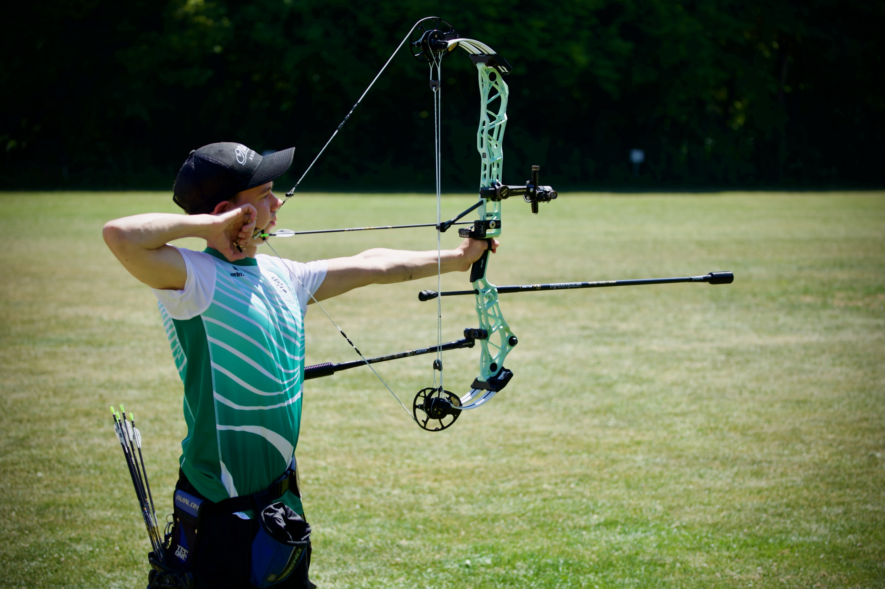
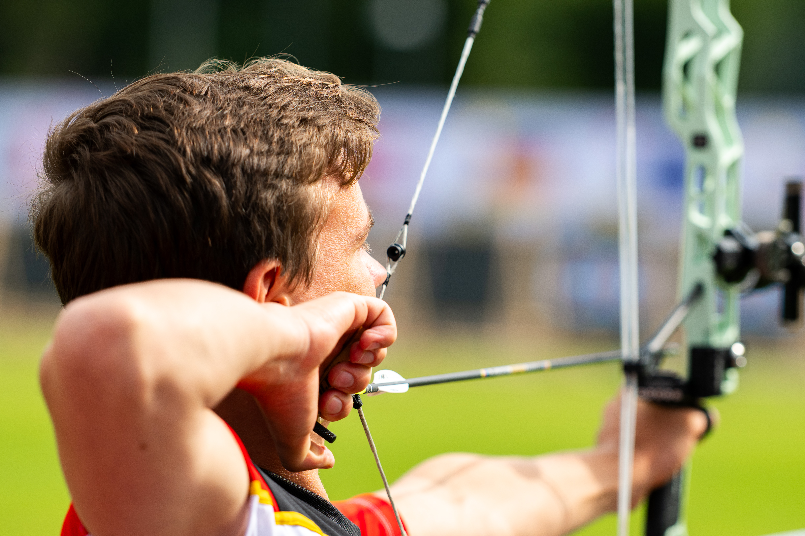

My other passion

I could not imagine a life without sports. Physics is awesome, but for me there has always been more to life than only intellectual challenges. In fact, archery is part of my life for a much longer time than physics is. I came into contact with this sport at the age of 11 at an archery club in Radeberg, close to my hometown Dresden. After learning the basics and shooting recurve for about one and a half years, I switched to the compound bow - the technically most advanced bow category - and I have never gone back since. I find archery to be an extremely fascinating sport, because it combines athletic skills (learning movements, precise execution, strength, endurance, ...) with immense mental strains. It requires focus and concentration over extended periods of time, as competitions usually last a whole day (or even several days). And despite loving the sport itself, I also used to be very competitive and ambitious, spending countless weekends at local and national competitions. Actually, I could celebrate quite a few successes, working my way up to several national titles and medals in the youth and junior divisions.

My personal highlight as a competitive archer was the participation in the 2025 FISU World University Games that took place in the Rhine-Ruhr region in Germany. The World University Games are the biggest multisports event after the Olympics and Paralympics, with more than 9000 participants in the 2025 edition. It has always been one of my childhood dreams to represent Germany on an international stage and in 2025 I finally had this opportunity. The hard work over the months before (handling the split between finishing my Master's, starting a PhD and increasing the training intensity) paid off when I secured one of the three spots on the team in the compound male division. Being the only person on the archery team who was not part of the national team, I was quite nervous beforehand and didn't really know what to expect. But it all went well: I could have shot better, certainly, but I finished 17th individually and 7th in team, which was much more than I dared to hope for. However, the competition itself was only part of the experience. The whole event was simply amazing! Having the opportunity to be part of Team Studi, sharing the stage with all these international athletes in so many different disciplines and being able to watch all the other sports was just incredible.